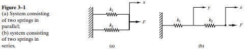
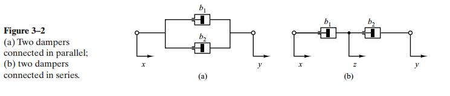
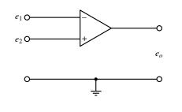

Chapter 3
This chapter looks at mathematical modeling of mechanical systems and electrical systems.
Impeadence : is the measure of the opposition that a circuit presents to a current when a voltage is applied.
3-2 Mathematical Modeling of Mechanical Systems

To obtain the equivalent spring constant from the above image
In parallel
in series
A dashpot is a device that provides viscous friction. The equation is modeled identically to the spring coefficients except that the derivative is the
The Viscous coefficient $ b $ follows a similar pattern

In parallel
In Series
Mathematical Modeling of Electrical Systems
- Kirchoffs current law (Node Law)
- the algebraic sum of all currents entering and leaving a node is zero.
- The sum of currents entering a node is equal to the sum of currents leaving the same node
- Kirchoffs Node law (Loop Law)
- At any given instant the algebraic sum of the voltages around a loop in an electrical circuit is zero
- The sum of the voltage drops is equal to sum sum of the voltage rises around a loop
LRC Circuit
- The inductance L (henry)
- The resistance R (ohm)
- The capacitance C (frand)
Operational Amplifier (Op amp)

- The input into the minus terminal is inverted and input to the positive is not. The opamp is defined by
Where the e's are input voltages